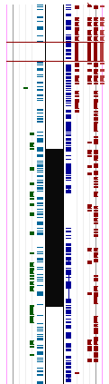
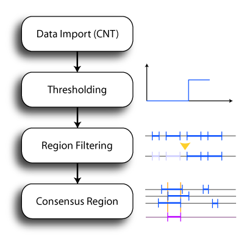
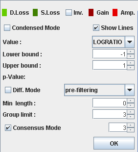
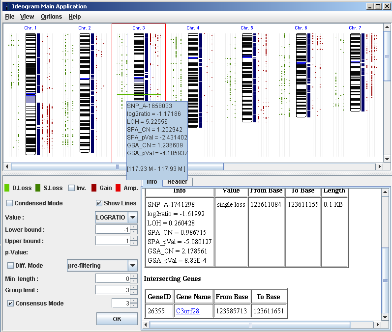
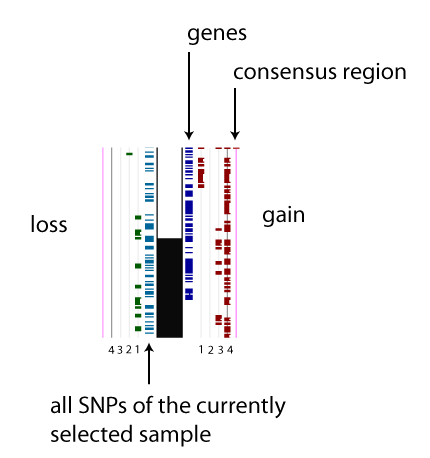
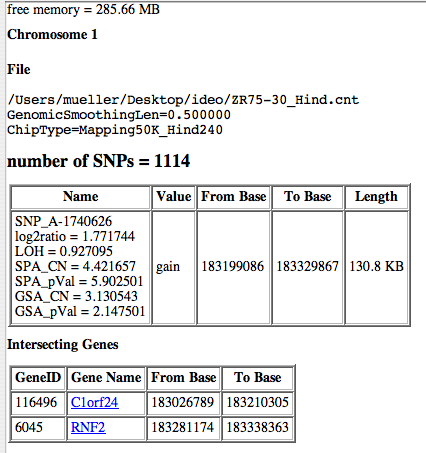
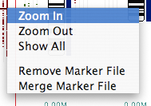

IdeogramBrowser Software Documentation
A Java tool for visualizing genomic aberrations
using Affymetrix
SNP arrays.
Introduction
The IdeogramBrowser can be used to
easily compare a
set of output files from the
Affymetrix Chromosome Copy Number Analysis Tool.
Loss of heterozygosity (LOH) or loss/gain markers are plotted against their
corresponding chromosomal region in a karyotypic representation
together with genes.
|

|
Features
IdeogramBrowser provides:
- Plotting of SNP markers in a karyogram (always new generated from
the ideogram table of the NCBI mapview BUILD 36.2 database).
See the Appendix A for changing the default database.
- SNP array sizes of 10k, 50k, 100k, and 500k can be imported from the Affymetrix
copy number analysis tool (CNAT 3 and CNAT 4) directly in the CNT file format (version 1.0 and 1.1).
- A general tab delimited text file format can be imported for importing foreign data
(e.g. generated by a spreadsheet application such as Microsoft Excel). So the
software is not limited to Affymetrix SNP arrays and the Affymetrix Copy Number Analysis Tool (CNAT 3 and 4).
SNP analysis can be combined e.g. with array CGH data.
The new CNAT 4 format splits the LOH markers in a second file. If the files have the same prefix the LOH files are automatically load upon opening a copy number (CN) file.
- Plotting of gene markers from a local copy of the
NCBI mapview database (BUILD 36.2)
- Batch processing/multiple file import. Merging of split files.
- Thresholding of log2ratios, LOH (loss of heterozygosity),
SPA (single point analysis copy number), and
GSA (genome smoothed copy number) values for marker generation (the latter is only available for
chips with more than 10k SNPs).
- Noise reduction via filtering functionality
- Conensus region representation.
- Links to http://www.genecards.org
- Export to JPG, SVG, and PDF format.
- Printing functionality (the printing may not work under Linux in combination with CUPS - this is a Java 1.5/CUPS problem: export the diagrams as pdf and print e.g. with Acrobat Reader)
- A condensed mode is included showing only profile lines with aberrations.
History
- v0.20
-
- Import of the CNAT 4 file format - bug fixed.
- v0.19.8
-
- The CNAT 4 format is now supported (format version 1.1)
- Different colors for amplifications and double losses.
- Color swap for gains/losses.
- Custom colors for aberrations.
- Info panel showing the header information of a selected profile supporting marking and copying (CTRL+C) into the clipboard such that the information can easily be pasted into a text processing software.
- v0.19.7
-
- Printing functionality for single chromosomes and all chromosomes added.
- PDF export added.
- Scrolling to selected markers when selected with the left/right arrow keys.
- Improved selection of overlapping regions with the mouse. By clicking more than
once on a marker selection all overlapping markers are cycled.
- Improved error handling for CNT file import.
- Condensed mode for more compact diagrams added.
- Improved zoom functionality: Click and drag within the ideogram
to create a zoom region.
Known Problems
- There may occur problems when accessing printers from Java 1.5 under Linux using the CUPS server
(depending on the CUPS/Linux version). However this problem does not occur under WindowsXP/MacOSX.
Data Flow
- Data Import of CNT or text file
- Thresholding for gain/loss or LOH detection
- Optional merging of two or more SNP profiles
- Pre- or post-merge filtering via a sliding window approach
- Consensus region finding
- Interactive exploration, SVG export
|

|
Installation
The software requires the Java runtime environment 1.5.0 (JRE 5.0) which can be downloaded from java.sun.com.
- Install JRE 5.0 (1.5.0) or newer if it is not available on your system.
- Download the current IdeogramBrowser version and unpack the file into a directory. MacOS X users can alternatively use the .dmg disk image.
- Start IdeogramBrowser by
- Windows: Double click on ideogram.bat in the installation directory.
- Unix/Linux/MacOS X: Call ideogram.sh from the command line (ensure that your java executable is in the search path) in the installation directory.
- MacOS X with disk image: Open the disk image with a double click and drag the ideogram-xxx.app icon to your applications folder.
Hint: It is not recommended to call IdeogramBrowser by a direct click on the ideogram.jar file since the standard memory assignment is too low for the most file arrangements.
IdeogramBrowser is packed into a single zip archive which must be unzipped (e.g. using WinZip) into the desired directory (e.g. "C:\Program Files\" or your home directory). Call ideogram.sh in the IdeogramBrowser directory from the command line (Linux or Mac OS X) or double click ideogram.bat under Microsoft Windows in the file explorer.
When importing many files IdeogramBrowser may report an out of memory error. In these cases open ideogram.sh (Linux or Mac OS X) or ideogram.bat (Windows) with a text editor (e.g. vi, Emacs, or notepad) and change the memory size by editing the two -X options of the java call. The -X options specify the memory size (in MB) assigned to the software. These can be adapted depending on the available memory and the testset size (number of imported .cnt files). The standard settings are usually too small for the most problems (2MB for Sun Java 1.5 on Linux and 1MB on win). Replace the two parameters e.g. by -Xmx1024m -Xms1024m for assigning 1024MB memory to the software.
Pre-Compiled Version
The current IdeogramBrowser version can be downloaded from this link:
IdeogramBrowser-0.20.0.zip (v0.20.0)
IdeogramBrowser-0.19.8.zip (v0.19.8)
IdeogramBrowser-0.19.7.zip (v0.19.7)
IdeogramBrowser-0.19.5.zip (v0.19.5)
Source Code
IdeogramBrowser-0.20.0-src.tar.gz (v0.20.0)
IdeogramBrowser-0.19.8-src.tar.gz (v0.19.8)
IdeogramBrowser-0.19.7-src.tar.gz (v0.19.7)
License

This work is licensed under a
Creative Commons Attribution 2.5 License
and has to be properly cited.
Bioinformatics Abstract
Included Libraries
IdeogramBrowser includes the following open source Java libraries:
The following steps lead to a chromosomal displayed marker set:
- Import a marker set
- Filtering (Choose copy number value and threshold)
- Explore the displayed ideogram
IdeogramBrowser can import two different file formats:
This is a tab delimited ASCII file format with one aberration value in each line which can easily be generated by e.g. Microsoft Excel or OpenOffice.
Each marker line should contain five columns:
CHROMOSOME (1..22,X,Y)
START_BP (Integer > 0)
STOP_BP (Integer > 0)
NAME (String)
VALUE (Integer)
A short example can be downloaded: marker_example.txt.
The VALUE field represents a copy number which is defined by the following ranges:
| VALUE < 0 | Illegal value |
| 0 < VALUE < 2 | Loss |
| 2 | No aberration |
| VALUE > 2 | Gain |
IdeogramBrowser can import the
Affymetrix Chromosome Copy Number Analyis Tool (CNAT)
output file format (.cnt files).
The tab-delimited TXT format of the CNAT tool is currently not supported.
A brief summary of using CNAT to generate these files is given in the CNAT manual.
Example files can be downloaded: Affymetrix sample data sets (these have to be first processed by CNAT 3.0 or newer to compute
the copy numbers).
The Affymetrix example data sets MCF7, Ref103, SKBR3, and ZR75-30 were processed by CNAT 3.0 with
the standard settings and the corresponding CNT files can be downloaded ideo-examples.zip
Tabbed Text File
Choose the menu point Load Markers in the File menu and navigate to a file in the format described in text file format.
CNAT Export File
Choose the menu point Load Markers in the File menu and navigate to a file in the format described in CNT file format.
The imported marker sets can be thresholded and filtered. All required
parameters can be controlled via the filtering panel. Upon pressing
the OK button the visualization is immediately adapted.

The following parameters can be adapted:
- Colors
- With clicking on the inv button the colors for
gains/losses are switched. A click with the right mouse button on
a color shows a color selector from which a customized color can
be selected.
- Display Modes
-
Condensed Mode Shows only non-empty marker lines if activated.
Show Lines Shows a gray background line for each sample
- Field Selection
-
Depending on the loaded CNAT format version (3 or 4) different fields appear in the field selector.
Using the drop down menu on the
filter panel switches between the display of
- CNAT 3 format
- LOGRATIO, GSA, SPA, LOH
- CNAT 4 format
- CNState, Log2Ratio, HmmMedianLog2Ratio, NegLog10Pvalue, LOHProb
values from the CNT files. In case of tabbed text file input only copy numbers are
supported and displayed (see tabbed text file format).
- Thresholding
- The imported values could be thresholded by tuning the
lower and upper bounds for the copy number detection. After
pressing the OK-Button all markers with values lower/greater than the
lower/upper bound will be displayed in the ideogram on the left/right
side of the chromosomes.
- Merging Method
-
When merging multiple SNP files into a single profile via the
context menu Merge Marker File among two different
alternatives can be chosen:
- resolution enhancement:Interlocking SNP chips are
merged in order to extend the genomic resolution.
- reliability enhancement/conflict detection:Interlocking SNP chips or
SNP chips of the same type are scanned for common gains/losses
which are then shown in the diagram. If one chip votes for a
gain and the other chip(s) votes for a loss this conflict
situation is marked by a magenta marker.
This mode can be activated by setting the check box
Diff. Mode in the filter panel.
- Filtering Method
-
It can be choosen among three filtering routings:
- no filtering: All SNPs are shown
- pre-filtering: SNPs are filtered before merging
- post-filtering: SNPs are filtered after merging
For single profiles the last two methods are identically.
- Filtering Parameters
- Group limit is used to restrict the view on
groups of adjacent markers with the given minimal group
size. Additionally a minimal length for the length of this group in
million base pairs could be set. Both criteria have to be fulfilled
for a certain region in order to be shown in the diagram.
- Consensus Mode
- If the check box Consensus Mode is activated a further
marker line is shown in the diagram. Only those regions are shown
for which at least n number of samples vote for gain/loss
or LOH. This limit is configurable via the spin button on the
right side of the consensus mode check box.
IdeogramBrowser allows the interactive exploration of the marker sets.

The upper (ideogram) panel shows the 24 chromosomes and the imported markers. When moving the mouse slowly over the chromosomes, the corresponding genome region under the mouse is shown in a small tool tip window. Also the GeneID and gene names are shown when moving the mouse over the blue bar on the right side of the chromosomes.
When a gene is selected with the left mouse button the details of the selection are listed in the info panel below the ideogram panel. If a marker is selected (blinking) the marker info and a summary of intersecting genes is displayed on the info panel.
The Karyogram Panel
Depending how many datasets are loaded into IdeogramBrowser one marker
line appears on the left and the right side of the ideogram. A data
slot can be selected with the mouse by clicking on the gray marker
line. Once a data slot is selected all SNPs (independent of the merge
mode and the number of losses/gains or LOHs) are shown on the left
side for an assessment of the coverage of the genome.

The Info Panel
The lower (info) panel shows the information for the selected items on the ideogram panel.
Marker info and/or gene info is available. Clicking on the hyperlinked gene names opens a
browser window displaying additional information from the
www.genecards.org webpage.

When moving the mouse over chromosomes, genes, or markers a small tool tip window
appears showing information about the chromosomal region, the genes or
the SNP markers.
|
By clicking the right mouse button on a marker/marker line
the popup menu opens.
It provides Zoom In and Zoom Out fields for zooming into the chromosomes.
Show All shows the whole chromosome.
If a marker is selected additional the Remove Marker File option is shown.
By choosing this command the complete marker line containing the selected marker
is removed from the workbench.
The context menu item Merge marker file enables to merge the
currently selected marker line with another CNT file. This feature is useful for
importing split files such as those originating from the CNAT analysis
of 100k chips.
|
 |
The ideogram panel could be controlled by clicking the folowing keys:
- Select one chromosome with the mouse.
- Press +/- to zoom in/out the chromosome.
- Press Up, Down, Page Up, Page Down, Home or End or move mouse wheel to scroll through a zoomed chromosome.
- Press Shift and move the mouse wheel simultaneously
to zoom in and out.
- Press Enter or Second Mouse Button to reset the zoom level of the chromosome.
- Press Right/Left to step to the next/previous marker. This command is only available if a marker is selected.
- Click into the ideogram and drag to select a zooming window which is then accordingly selected. Double clicking or using the Zoom Out function restores the last zoom setting.
Select File/Save to save the current karyogram as JPEG, PDF, or SVG (scalable vector graphics).
Hint: SVG export may take a very long time.
The original version of this page is available at
http://www.informatik.uni-ulm.de/ni/staff/HKestler/ideo/doc.html
Single chromosomes or the whole ideogram can be printed via the two menu items
- File/Print single chromosome
- File/Print all chromosomes
Hint:The printing may not work under Linux in combination with CUPS -
this is a Java 1.5/CUPS problem: export the diagrams as pdf and print e.g. with Acrobat reader.
The two database table ideogram.gz and seq_gene.md.gz are packed into the jar archive of IdeogramBrowser. The current version of this database are available on the NCBI ftp site:
ftp://ftp.ncbi.nlm.nih.gov/genomes/H_sapiens/mapview/.
Older versions can be found in the archives
ftp://ftp.ncbi.nlm.nih.gov/genomes/H_sapiens/ARCHIVE. Just place the above mentioned files into the ideogram/data directory in the archive (unjar and jar the archive with the manifest.txt file).
As the file format of these tables changes for (nearly) every release it may be necessary to
- adapt the read() functions in ideogram.db.GeneDB and ideogram.db.IdeogramDB, or
- reformat the database files such that they have the BUILD.36.2 format.
Hans A. Kestler
© by Hans A. Kestler & André Müller